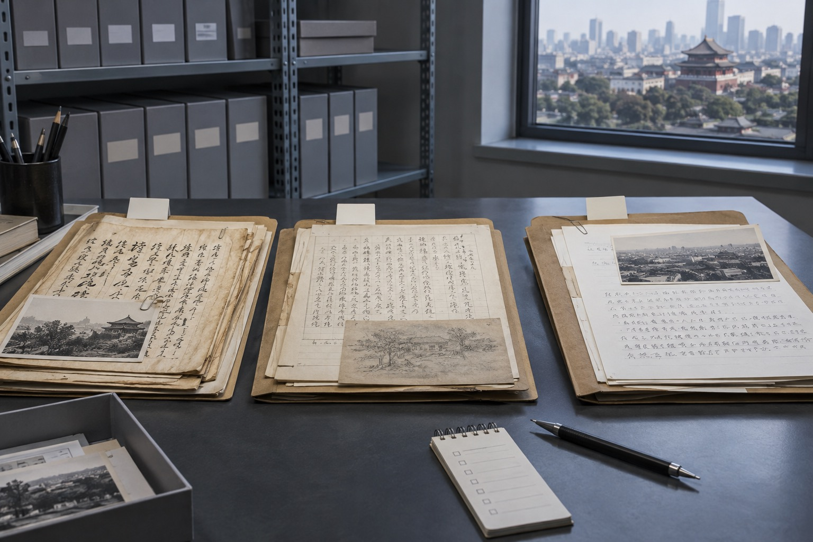

北京商务文件里的签字页，为什么要和连续正文分开？
商务文件往往同时有合同签字、会议批注和连续正文。整理北京站的模仿笔迹、模仿签名与笔迹鉴定资料时，先按书写场景分组更容易比较。
商务文件往往同时有合同签字、会议批注和连续正文。整理北京站的模仿笔迹、模仿签名与笔迹鉴定资料时，先按书写场景分组更容易比较。

会议记录常有多页和多次批注，先按会议日期、页码和形成年份建立对应关系。本文从北京实际资料整理角度说明页面、版本与原图的保存方法。
一行签字栏会限制签字长度，整页图能说明栏位宽度、落款位置和周围表格。本文从北京实际资料整理角度说明页面、版本与原图的保存方法。

跨年份材料要区分早期、同期和近期样本，避免把自然变化误当成同一阶段的差异。本文从北京实际资料整理角度说明页面、版本与原图的保存方法。

北京站签名样本新增正式版与简写版分组，围绕北京模仿笔迹、模仿签名、模仿签字和笔迹鉴定更新服务资料。

北京多页模仿笔迹资料怎样编号？签名与鉴定文件清单，围绕北京模仿笔迹、模仿签名、模仿签字和笔迹鉴定介绍资料准备方法。
围绕模仿笔迹、模仿签名、模仿签字和笔迹鉴定整理实用资料。

介绍服务内容、样本要求、价格因素和办理流程。
介绍签名服务范围、签字样本要求、费用与周期。

介绍笔迹鉴定范围、对比材料、费用周期和常见问题。

介绍手写文件、个人字体、字符数量和交付方式。